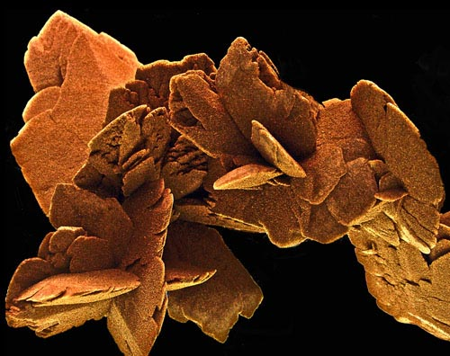

Lynda Lehmann
Ancient History
 |
| (1 of 7) |
 |
| (1 of 7) |
Lynda Lehmann writes, "I studied Art Education at Penn State and received a BFA from Hofstra, and have taken courses in advertising art and textile design. I worked as a commercial artist before pursuing my own art. During the past several years, I have enjoyed digital photography and digital painting, as well as real-time brush and pigment painting."As a child, I slipped into reveries as I experienced natures beauty. As an adult, I realize that my love of beauty has inspired my life. Art is a visual syntax with its own imperatives. I enjoy contemplating where my eye enters a piece, how it moves through the composition, experiencing the structure and nuances as one would savor a sentence that is poetically wrought. I love the freedom and rhythm and musicality I find in doing abstract art, whether it is hand or computer generated.
"I think it is the job of the artist to present new forms of beauty, some of which can lead to new visions and even inspire new ways of thinking. The current interface between science and art, via the use of the computer, is fascinating and has endless potential for presenting new paradigms. I'm very excited about the sense of discovery I feel when creating an artwork that did not exist before!"